소음진동기사(구) (2016-05-08 기출문제)
1과목: 소음진동개론
1. 소음의 평가에 과한 설명으로 옳지 않은 것은?
- 등가소음도(Leq)는 임의의 측정시간 동안 발생한 변동소음의 총 에너지를 같은 시간내의 정상소음의 에너지로 등가하여 얻어진 소음도이다.
- 주야 평균소음레벨(Ldn)은 하루의 매 시간당 등가소음도를 측정한 후, 야간(22:00~07:00)의 매시간 측정치에 15dB의 벌칙레벨을 합산한 후 파워평균(dB합)한 레벨이다.
- 소음통계레벨(LN)은 총 측정시간의 N(%)를 초과하는 소음레벨로, L10이란 총 측정시간의 10(%)를 초과하는 소음레벨이다.
- 소음공해레벨(LNP)은 변동 소음의 에너지와 소란스러움을 동시에 평가하는 방법이다.
(정답률: 알수없음)

2. 출력이 0.1W인 작은 점음원으로부터 100m 떨어진 곳의 음압레벨(dB)은? (단, 무지향성 자유공간 기준)
- 약 59 dB
- 약 62 dB
- 약 82 dB
- 약 85 dB
(정답률: 알수없음)
3. 공장 부지내의 지면에 소형 압축기가 있고, 그 음원에서 10m 떨어진 곳의 음압레벨이 80dB이었다. 이것을 70dB로 하기 위해서는 이 압축기를 얼마만큼 더 이동하면 되겠는가?
- 약 5.6m
- 약 10.6m
- 약 15.6m
- 약 21.6m
(정답률: 알수없음)
4. 마스킹 효과의 특성에 관한 설명으로 옳은 것은?
- 협대역폭의 소리가, 같은 중심주파수를 갖는 같은 세기의 순음보다 더 작은 마스킹 효과를 갖는다.
- 마스킹소음의 레벨이 커질수록 마스킹되는 주파수의 범위가 줄어든다.
- 마스킹효과는 마스킹소음의 중심주파수보다 고주파대역에서 보다 작은 값을 갖게 되는 이중대칭성을 갖고 있다.
- 마스킹소음의 대역폭은 어느 한계(한계대역폭) 이상에서는 그 중심주파수에 있는 순음에 대해 영향을 미치지 못한다.
(정답률: 알수없음)
5. 소음을 600~1200Hz, 1200~2400Hz, 2400~2800Hz의 3개의 밴드로 분석한 음압레벨의 산술평균값은?
- NC
- SIL
- NRN
- PNC
(정답률: 알수없음)
6. 소음을 옥타브 밴드로 분석한 결과에 의해 실내 소음을 평가하는 방법으로서, 소음기준 곡선 혹은 실내의 배경소음 평가방법을 나타내는 것은?
- NRN
- NC
- SL
- SIL
(정답률: 알수없음)
7. 다음은 청각기관의 구조에 관한 설명이다. ( )에 알맞은 것은?
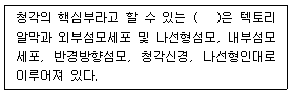
- 청소골
- 난원창
- 세반고리관
- 코르티기관
(정답률: 알수없음)
8. 등청감곡선에 관한 설명으로 옳지 않은 것은?
- 1000Hz 순음의 음압레벨과 같은 크기로 들리는 각 주파수의 음압레벨을 연결한 것이다.
- 음압레벨이 커질수록 등청감곡선에서의 주파수별 음압레벨차가 커진다.
- 저주파일수록 청감에 둔해짐을 알 수 있다.
- 청감은 4000Hz 주위의 음에서 특히 예민하다.
(정답률: 알수없음)
9. 진동감각에 관한 설명으로 옳지 않은 것은?
- 수직 및 수평진동이 동시에 가해지면 2배의 자각현상이 나타난다.
- 15Hz 부근에서 심한 공진현상을 보이고, 2차적으로 40~50Hz 부근에서 공진현상을 나타내지만 진동수가 증가함에 따라 감쇠가 급격히 감소한다.
- 진동가속도레벨이 55dB 이하인 경우, 인체는 거의 진동을 느끼지 못한다.
- 진동에 의한 신체적 공진현상은 서 있을 때가 앉아 있을 때보다 약하게 느낀다.
(정답률: 알수없음)
10. 85phon인 음은 몇 sone 인가?
- 약 2.8
- 약 5.6
- 약 22.6
- 약 49.6
(정답률: 알수없음)
11. 스프링상수 100N/m, 질량이 10kg인 점성감쇠계를 자유진동시킬 경우, 임계감쇠계수는?
- 약 18N·s/m
- 약 33·s/m
- 약 63N·s/m
- 약 98N·s/m
(정답률: 알수없음)
12. 인체의 청감기관에 관한 설명으로 옳지 않은 것은?
- 음을 감각하기까지의 음의 전달매질은 고체 → 기체 → 액체순이다.
- 고실과 이관은 중이에 해당하며, 망치뼈는 고막과 연결되어 있다.
- 외이도는 일단개구관으로 동작되며 음을 증폭시키는 공명기 역할을 한다.
- 이소골은 고막의 진동을 고체진동으로 변화시켜 외이와 내이를 임피던스 매칭하는 역할을 한다.
(정답률: 알수없음)
13. 1/3옥타브 밴드 분석기(정비형 필터)의 중심주파수가 4000Hz 인 경우 다음 중 차단(하한~상한) 주파수 범위(Hz)로 가장 적합한 것은?
- 2800~3550
- 3174~5040
- 3563~4490
- 4470~5600
(정답률: 알수없음)
14. 음의 회절에 관한 설명으로 가장 적합한 것은?
- 굴절 전후의 음속차가 클수록 굴절이 감소한다.
- 대기온도 차에 따른 굴절은 온도가 높은쪽으로 굴절한다.
- 장애물 뒤쪽에도 음이 전파되는 현상을 의미한다.
- 음원보다 상공의 풍속이 클 때 풍상층에서는 아래쪽을 향하여 굴절한다.
(정답률: 알수없음)
15. 실내소음에 의해 다른 사람의 말을 잘 이해하지 못 할 때와 같이 소음에 의해 회화가 방해되는 경우 등 회화방해에 대한 소음평가척도를 나타내는 것으로 가장 적절한 것은?
- TNI
- PNL
- EPNL
- SIL
(정답률: 알수없음)
16. 소음성 난청 예방의 허용치는 얼마로 권장하고 있는가?
- 1일 폭로시간 8시간일 때 90dB(A)이하로 권장
- 1일 폭로시간 10시간일 때 80dB(A)이하로 권장
- 1일 폭로시간 12시간일 때 70dB(A)이하로 권장
- 1일 폭로시간 14시간일 때 60dB(A)이하로 권장
(정답률: 알수없음)
17. 다음은 역이승법칙에 관한 설명이다. ( )에 알맞은 것은?
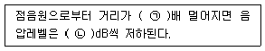
- ㉠ 2, ㉡ 6
- ㉠ 2, ㉡ 3
- ㉠ 3, ㉡ 6
- ㉠ 3, ㉡ 3
(정답률: 알수없음)
18. 기계의 진동을 계측하였더니 진동수가 10Hz, 속도 진폭이 0.001m/s로 계측되었다. 이 진동가속도레벨은 얼마인가? (단, 기준진동의 가속도실효치는 10-5m/s2)
- 약 37 dB
- 약 40 dB
- 약 73 dB
- 약 76 dB
(정답률: 알수없음)
19. 소음도(소음레벨)에 관한 설명으로 옳지 않은 것은?
- 낮은 주파수 성분이 많을수록 시끄럽다.
- 배경소음과의 레벨차가 클수록 시끄럽다.
- 소음레벨이 클수록 시끄럽다.
- 충격성이 강할수록 시끄럽다.
(정답률: 알수없음)
20. 항공기 소음의 평가방법 또는 평가치로 사용되지 않는 것은?
- NNI
- EPNL
- NEF
- PNC
(정답률: 알수없음)
2과목: 소음방지기술
21. 어떤 공장 내에 아래의 조건을 만족하는 A실과 B실이 있다. 잔향시간 측정방법에 의한 A실의 잔향시간을 3초라 할 때, B실의 잔향시간은? (단, A실과 B실의 내벽은 동일재료로 되어있다.)
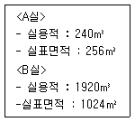
- 약 2초
- 약 3초
- 약 4초
- 약 6초
(정답률: 알수없음)
22. 흡음 덕트형 소음기에 관한 설명으로 옳지 않은 것은?
- 덕트의 최단 횡단길이는 고주파 beam을 방해하지 않는 크기여야 한다.
- 각 흐름통로의 길이는 그것의 가장 작은 횡단길이의 2배는 되어야 한다.
- 통과유속은 20m/sec 이하로 하는 것이 좋다.
- 감음의 특성은 중·고음역에서 좋다.
(정답률: 알수없음)
23. 공장 내 사무실과 작업공간 사이에 단일벽이 존재한다. 표는 단일벽 구성부의 차음특성을 보인다. 구성부에 차음대책을 보완할 때 가장 먼저 보완할 부분은?
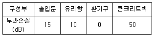
- 출입문
- 유리창
- 환기구
- 콘크리트벽
(정답률: 알수없음)
24. 높이 5m, 폭 20m의 공장 벽면이 콘크리트벽(면적 58m2, TL=50dB), 유리(면적 40m2, TL=30dB),그리고 환기구(면적 2m2, TL=0dB)로 구성되어 있다. 이 벽면의 총합 투과손실은?
- 약 17dB
- 약 21dB
- 약 23dB
- 약 25dB
(정답률: 알수없음)
25. 투과손실이 45dB 인 5m × 3m의 벽체가 있다. 이 벽체 내에 2m2 크기의 출입문을 설치하고자 한다. 출입문 설치 후 이 벽체의 총합투과손실이 30dB이 되려면, 이 출입문의 투과손실은? (단, 출입문 2m2 이외의 틈새는 없다고 가정)
- 약 11dB
- 약 13dB
- 약 18dB
- 약 21dB
(정답률: 알수없음)
26. 중심주파수 대역이 500Hz인 실내 소음을 저감시키기 위해 실내 벽체에 두께 5cm의 다공질형 흡음재료를 적용하려고 한다. 흡음재 부착 시 가장 흡음효과가 양호한 이론적인 배추공기층의 두께는?
- 공기층 없음
- 7cm
- 17cm
- 21cm
(정답률: 알수없음)
27. 부피가 3000m2, 내부표면적이 1700m2, 평균 흡음율이 0.3인 확산음장으로 볼 수 있는 공장에 관한 다음 설명 중 옳지 않은 것은?
- 실내에 파워레벨 90dB의 음원을 설치할 때 실내의 평균 음압레벨은 약 67dB이다.
- 실정수는 약 730m2이다.
- Sabine의 잔향시간은 약 0.95초이다.
- 실내 음선의 평균 자유행로(mean free path)는 약 11.8m이다.
(정답률: 알수없음)
28. 소음을 저감시키기 위해 아래 그림과 같은 흡음챔버를 설계하고자 한다. 챔버 내의 전체 표면적이 20m2이고, 챔버 내부를 평균흡음율이 0.53인 흡음재로 흡음처리 하였다. 흡음챔버의 규격 등이 다음과 같을 때 이 흡음챔버에 의한 소음감쇠치는 몇 dB로 예상되는가? (단, 챔버출구의 단면적 : 0.5m2 출구 - 입구사이의 경사길이(d) : 5m 출구 - 입구사이의 각도(θ) : 30℃)
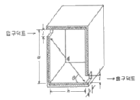
- 약 10dB
- 약 13dB
- 약 16dB
- 약 19dB
(정답률: 알수없음)
29. 차음재료 선정 및 사용상 유의할 사항으로 옳지 않은 것은?
- 여러 가지 재료로 구성된 벽의 차음효과를 높이기 위해서는 각 재료의 투과율이 서로 유사하지 않도록 주의한다.
- 큰 차음효과를 바라는 경우에는 다공질 흡음재료를 충진한 이중벽으로 하고 공명투과주파수 및 일치주파수 등에 유의하여야 한다.
- 차음벽 설치 시 저주파음을 감쇠시키기 위해서는 이중벽으로써 공기층을 충분히 유지시킨다.
- 기진력이 큰 기계가 설치된 공장의 차음벽은 진동에 의한 차음효과 감소를 고려해야 한다.
(정답률: 알수없음)
30. 방음상자의 설계시 검토해야할 사항과 거리가 먼 것은?
- 저감시키고자 하는 주파수의 파장을 고려하여 밀폐상자의 크기를 설계한다.
- 필요시 차음 대책과 병행해서 방진 및 제진대책을 세워야 한다.
- 밀폐상자내의 온도 상승을 억제하기 위해 환기설비를 한다.
- 환기용 Fan 주위는 환기 효율에 영향을 주므로 소음기 등을 설치하면 안된다.
(정답률: 알수없음)
31. 투과손실(TL)이 28dB인 벽의 투과율은?
- 0.00016
- 0.0016
- 0.016
- 0.16
(정답률: 알수없음)
32. 다음 소음기의 성능을 표시하는 용어에 대한 설명에서 ( )안에 가장 알맞은 것은?
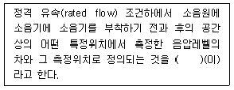
- 동적 삽입손실치
- 투과손실치
- 감쇠치
- 감음량
(정답률: 알수없음)
33. 중공 이중벽의 공기층 두께가 40cm, 두 벽의 면밀도가 각각 150kg/m2, 200kg/m2 일 때, 저음역에서의 공명주파수는?
- 약 7Hz
- 약 10Hz
- 약 18Hz
- 약 22Hz
(정답률: 알수없음)
34. 단일벽의 투과손실은 벽체의 면밀도 2배가 되면 몇 dB 증가하는가?
- 2dB
- 3dB
- 6dB
- 12dB
(정답률: 알수없음)
35. 청감보정회로 중에서 A특성은 Fletcher-Munson의 등청감곡선에서 몇 Phon에 해당되는가?
- 40
- 50
- 60
- 70
(정답률: 알수없음)
36. 다음 방음 대책 중에서 고주파 음에 대한 소음 저감 대책이 아닌 것은?
- 차음벽 설치
- 흡음재 시공
- 견고한 자재에 의한 밀폐상자 설치
- 고무 방진을 통한 고체음 저감
(정답률: 알수없음)
37. 다음 중 난입사 흡음을 측정법으로 가장 적절한 것은?
- 관내법
- 잔향실법
- 정재파법
- 관외법
(정답률: 알수없음)
38. 소음기의 형식에 관한 설명으로 옳지 않은 것은?
- 공명형 : 관로 도중에 구멍을 판 공동과 조합한 구조로 되어 있다.
- 흡음형 : 덕트 내에 유리솜 등 흡음물을 사용하여 소음하는 방식이다.
- 팽창형 : 음파를 확대하고 음향에너지 밀도를 크게 하여 소음하는 방식이다.
- 간섭형 : 음파 간섭에 의해 소음하는 방식이다.
(정답률: 알수없음)
39. 집회장, 공연장, 공개홀, 공장건물 내 등 실내벽면에 흡음대책을 세워 감음을 하고자 할 때, 실내 흡음대책에 의해 기대할 수 있는 경제적인 감음량의 한계는 일반적으로 얼마인가?
- 약 5~10dB 정도
- 약 20~30dB 정도
- 약 31~40dB 정도
- 약 41~50dB 정도
(정답률: 알수없음)
40. 소음방지 대책을 소음원 대책, 전달경로 대책, 수음자 대책으로 분류할 때, 다음 중 전달경로 대책에 해당되는 것은?
- 충격이 발생하는 지점에 유연한 재료를 부착하여 장비로부터 발생하는 충격력을 저감시킨다,
- 기존 건물 내 소음원의 위치를 변경하여 소음원과 수음자 사이의 거리를 늘려준다.
- 작업공간에 방음 부스 등을 설치한다.
- 작업자에게 귀마개 등 청력 보호장비의 착용을 의무화 한다.
(정답률: 알수없음)
3과목: 소음진동 공정시험 기준
41. 고속도로 또는 자동차 전용도로의 도로변지역의 범위기준으로 옳은 것은?
- 도로단으로부터 10m 이내의 지역
- 도로단으로부터 50m 이내의 지역
- 도로단으로부터 100m 이내의 지역
- 도로단으로부터 150m 이내의 지역
(정답률: 알수없음)
42. 환경기준 중 소음측정방법에서 낮 시간대 (06:00~22:00)의 측정시간 및 횟수 기준은?
- 30분 이상 간격으로 8회 이상
- 1시간 이상 간격으로 8회 이상
- 1시간 이상 간격으로 4회 이상
- 2시간 이상 간격으로 4회 이상
(정답률: 알수없음)
43. 다음은 소음진동공정시험기준에 규정된 진동레벨계의 성능기준이다. ( )에 알맞은 것은?
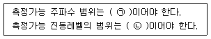
- ㉠ 1~90Hz 이상, ㉡ 25~65dB 이상
- ㉠ 1~90Hz 이상, ㉡ 45~120dB 이상
- ㉠ 55~90Hz 이상, ㉡ 25~65dB 이상
- ㉠ 55~90Hz 이상, ㉡ 45~120dB 이상
(정답률: 알수없음)
44. 소음한도 측정방법 중 도로교통소음 측정에 관한 설명으로 옳지 않은 것은?
- 측정점은 피해가 예상되는 자의 부지경계선 중 소음도가 높을 것으로 예상되는 지점의 지면위 1.2m~1.5m 높이로 한다.
- 측정지점에 높이가 1.5m를 초과하는 장애물이 있는 경우에는 장애물로부터 소음원 방향으로 1.0~3.5m 떨어진 지점으로 한다.
- 장애물이 방음벽이거나 충분한 차음이 예상되는 경우에는 장애물 밖의 1.0~3.5m 떨어진 지점 중 암영대(暗影帶)의 영향이 적은 지점으로 한다.
- 요일별로 소음변동이 적은 휴일(토요일, 일요일 등)에 당해지역의 도로교통소음을 측정하여야 한다.
(정답률: 알수없음)
45. 소음계의 측정감도를 교정하는 기기인 표준음발생기(pistonphone, calibrator)의 발생오차 범위는?
- ± 1dB 이내
- ± 3dB 이내
- ± 5dB 이내
- ± 10dB 이내
(정답률: 알수없음)
46. 규제기준 중 동일건물 내 사업장소음 측정방법에 관한 설명으로 옳지 않은 것은?
- 소음계의 동특성은 원칙적으로 빠름(fast)모드를 하여 측정하여야 한다.
- 소음도 기록기가 없을 경우에는 소음계만으로 측정할 수 있으며, 소음계와 소음도 기록기를 연결하여 측정·기록하는 것을 원칙으로 한다.
- 측정점은 피해가 예상되는 실에서 소음도가 높을 것으로 예상되는 지점의 바닥 위 3~5m 높이로 한다.
- 측정점에 높이가 1.5m를 초과하는 장애물이 있는 경우에 장애물로부터 1.0m 이상 떨어진 지점으로 한다.
(정답률: 알수없음)
47. 다음은 소음도 기록기 또는 소음계만을 사용하여 측정할 경우 등가소음도 계산을 위한 판독방법이다. ( )에 알맞은 것은?
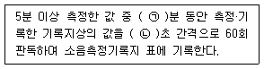
- ㉠ 1, ㉡ 5
- ㉠ 1, ㉡ 10
- ㉠ 5, ㉡ 5
- ㉠ 5, ㉡ 10
(정답률: 알수없음)
48. 소음계 중 교정장치(calibration network calibrator)에 관한 설명이다. ( )에 알맞은 것은?
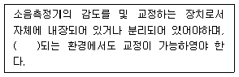
- 50 dB(A) 이상
- 60 dB(A) 이상
- 70 dB(A) 이상
- 80 dB(A) 이상
(정답률: 알수없음)
49. 소음계의 일반적 성능기준으로 옳지 않은 것은?
- 측정가능 소음도 범위는 35~130dB 이상이어야 한다.
- 측정가능 주파수 범위는 8~31.5kHz 이상이어야 한다.
- 지시계기의 눈금오차는 0.5dB 이내이어야 한다.
- 레벨레인지 변환기가 있는 기기에 있어서 레벨레인지 변환기의 전환오차가 0.5dB 이내 이어야 한다.
(정답률: 알수없음)
50. 진동배출허용기준의 측정방법 중 진동레벨계만으로 측정할 경우에 관한 설명으로 옳은 것은?
- 진동레벨계 지시치의 변화를 목측으로 30초 간격 10회 판독·기록한다.
- 진동레벨계 지시치의 변화를 목측으로 5초 간격 50회 판독·기록한다.
- 진동레벨계의 샘플주기를 0.5초 이내에서 결정하고 5분 이상 측정하여 기록한다.
- 진동레벨계의 샘플주기를 1초 이내에서 결정하고 5분 이상 측정하여 기록한다.
(정답률: 알수없음)
51. 소음진동공정시험기준에서 정한 각 소음측정을 위한 소음 측정지점수 선정기준으로 옳지 않은 것은?
- 배출허용기준 -1지점 이상
- 생활소음 - 2지점 이상
- 발파소음 - 1지점 이상
- 도로교통소음 - 2지점 이상
(정답률: 알수없음)
52. 발파진동 측정방법에서 측정기기의 사용 및 조작에 관한 설명으로 가장 거리가 먼 것은?
- 진동레벨계와 진동레벨기록 기를 연결하여 측정·기록하는 것을 원칙으로 한다.
- 진동레벨계만으로 측정할 경우에는 최저 진동레벨이 고정(hold)되는 것에 한한다.
- 진동레벨기록기의 기록속도 등은 진동레벨계의 동특성에 부응하게 조작한다.
- 진동픽업의 연결선은 잡음 등을 방지하기 위하여 지표면에 일직선으로 설치한다.
(정답률: 알수없음)
53. 7일간 측정한 WECPNL이 각각 62, 66, 64, 54, 65, 63,64 일 때 7일간 평균 WECPNL 값은?
- 62
- 64
- 66
- 68
(정답률: 알수없음)
54. 공장진동 측정 시 배경진동의 영향에 대한 보정치가 -2.4dB(V)일 때 공장의 측정진동레벨과 배경진동레벨과의 차(dB(V))는?
- 3.4
- 3.7
- 4.5
- 4.8
(정답률: 알수없음)
55. 배경소음 보정방법에 관한 설명 중 옳지 않은 것은?
- 배경소음도 측정 시 해당 공장의 공정상 일부 배출시설의 가동중지가 어렵다고 인정되고, 해당 배출시설에서 발생한 소음이 배경소음에 영향을 미친다고 판단될 경우에는 배경소음도 측정없이 측정소음도를 대상소음도로 할 수 있다.
- 2회 이상의 재측정에서도 측정소음도가 배경소음도보다 3dB 미만으로 크면 소음진동공정시험기준 서식의 공장소음 측정자료 평가표에 그 상황을 상세히 명기한다.
- 측정소음도가 배경소음도보다 10dB 이상 크면 배경소음을 보정하여 대상소음도를 구한다.
- 측정소음도와 배경소음도 차이가 7.2dB인 경우 보정치는 0.9dB 이다.
(정답률: 알수없음)
56. 배출허용기준 진동측정 시 디지털 진동자동분석계를 사용할 경우 배경진동레벨로 정하는 기준으로 옳은 것은?
- 샘플주기를 0.1초 이내에서 결정하고 5분 이상 측정하여 자동 연산·기록한 80% 범위의 상단치인 L10값
- 샘플주기를 0.1초 이내에서 결정하고 5분 이상 측정하여 자동 연산·기록한 90% 범위의 상단치인 L10값
- 샘플주기를 1초 이내에서 결정하고 5분 이상 측정하여 자동 연산·기록한 80% 범위의 상단치인 L10값
- 샘플주기를 1초 이내에서 결정하고 5분 이상 측정하여 자동 연산·기록한 90% 범위의 상단치인 L10값
(정답률: 알수없음)
57. 일반적인 소음계 기본구성 순서상 증폭기 바로 뒤에 위치하는 것은?
- monitor out
- weighting network
- microphone
- fast-slow switch
(정답률: 알수없음)
58. 측정지점에서 측정한 진동레벨 중 가장 높은 진동레벨을 측정진동레벨로 하는 기준 또는 한도가 맞는 것은?
- 생활진동규제기준, 도로교통한진동한도
- 배출허용기준, 철도진동한도
- 배출허용기준, 도로교통한진동한도
- 생활진동규제기준, 배출허용기준
(정답률: 알수없음)
59. 다음은 레벨레인지 변환기에 대한 설명이다. ( )에 맞는 것은?
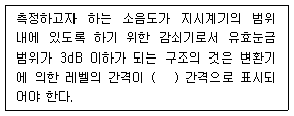
- 1dB
- 5dB
- 10dB
- 15dB
(정답률: 60%)
60. A공장의 측정소음도가 70dB(A)이고, 배경소음도가 59dB(A)이었다면 공장의 대상소음도는?
- 70dB(A)
- 69dB(A)
- 68dB(A)
- 67dB(A)
(정답률: 알수없음)
4과목: 진동방지기술
61. 감쇠요소에 관한 설명으로 옳은 것은?
- 보통 오일댐퍼의 부착자세는 자유롭지만 부착각도에는 제약이 있다.
- 오일댐퍼의 감쇠력은 넓은 진동수 범위에 걸쳐 안정되어 있다.
- 마찰댐퍼의 구조는 복잡하나 오리댐퍼와 비교시 감쇠력은 안전하고 신뢰성이 높다.
- 감쇠요소란 운동체에 저항을 주어 운동체의 위치에너지를 동적인 저항에너지로 변환시키는 장치이다.
(정답률: 알수없음)
62. 진동발생원의 진동을 측정한 결과, 가속도 진폭이 2×10-2m/m2이었다면 진동가속도레벨(VAL)은?
- 54dB
- 57dB
- 60dB
- 63dB
(정답률: 알수없음)
63. 그림과 같은 진동계 전체의 등가스프링 상수(Keq)는?
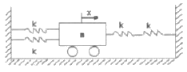
- 2k
- 3k
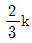
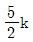
(정답률: 알수없음)
64. 진동의 원인이 되는 가진력은 크게 진동 회전부의 질량불평형에 의한 가진력, 기계의 왕복운동에 의한 가진력, 충격에 의한 가진력으로 분류된다. 다음 중 주로 질량불평형에 의한 가진력으로 진동이 발생하는 것은?
- 파쇄기
- 송풍기
- 프레스
- 단조기
(정답률: 알수없음)
65. 동적배율에 관한 설명으로 옳지 않은 것은?
- 정적스프링 정수에 대한 동적스프링 정수의 비를 말한다.
- 일반적으로 천연고무류는 1.2 정도이다.
- 일반적으로 합성고무류는 1.0 이하이다.
- 영율이 20N/cm2인 방진고무는 1.1 정도이다.
(정답률: 알수없음)
66. 공기 스프링의 주요 특성에 해당되는 것은?
- 부하능력이 광범위하다.
- 자동제어가 불가능하다.
- 공기 중 오존에 의해 산화된다.
- 사용진폭이 작은 것이 많아 별도의 댐퍼가 필요없다.
(정답률: 알수없음)
67. 금속스프링은 감쇠가 거의 없고, 고주파 진동시 단락되기 쉬우며, 로킹(rocking) 현상이 일어난다는 단점이 있다. 이를 보완하기 위한 대책으로 옳지 않은 것은?
- 스프링의 정적 수축량이 일정한 것을 쓴다.
- 기계 무게의 1~2배의 가대를 부착시킨다.
- 계의 중심을 낮게 하고 부하(하중)가 평형분포 되도록 한다.
- 스프링의 감쇠비가 클 경우에는 스프링과 병렬로 damper를 넣고 사용한다.
(정답률: 알수없음)
68. 점성감쇠가 있는 1 자유진동에서 부족감쇠(under damping)란 감쇠비가 어떤 값을 갖는 경우인가?
- 0 이다.
- 1 이다.
- 1 보다 작다.
- 1보다 크다.
(정답률: 알수없음)
69. 감쇠에 관한 설명으로 틀린 것은?
- 진동에 의한 기계에너지를 열에너지로 변환시키는 기능이다.
- 질량의 진동속도에 대한 스프링의 저항력의 비이다.
- 하중에 대해 원상태로 복원시키려는 힘이다.
- 충격 시의 진동을 감소시킨다.
(정답률: 알수없음)
70. 고유진동수 1Hz에서 감쇠비 0.5인 진동계가 있다. 측정할 물체가 50Hz 조화진동을 하고 있을 때 진동계의 진폭기록이 a이면 이 물체의 최대진폭은?
- 0.5a
- a
- 1.5a
- 2a
(정답률: 알수없음)
71. 기계를 기초에 고정하고 운전하였더니 기계의 상면의 높이가 990㎜부터 998㎜ 사이를 매분 120회 진동하였다. 이 진동의 가속도는?
- 0.63m/sec2
- 1.26m/sec2
- 2.52m/sec2
- 3.78m/sec2
(정답률: 알수없음)
72. 자동차의 진동에 관한 설명 중 ( )안에 공통으로 들어가기에 가장 알맞은 것은?
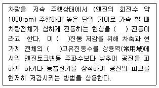
- 서어지(surge)
- 와인드업(wind up)
- 브레이크 저더(brake judder)
- 란체스터(lanchester)
(정답률: 알수없음)
73. 회전기계에서 발생하는 진동의 종류를 강제진동과 자려진동으로 구분할 때 다음 중 주로 자려진동에 해당하는 것은?
- 기초여진
- 점성유체력에 의한 휘돌림
- 구름베어링에 기인하는 진동
- 기어의 치형오차에 기인하는 진동
(정답률: 알수없음)
74. 방진재에 대한 다음 설명 중 옳지 않은 것은?
- 판스프링, 벨트, 스폰지 등도 가벼운 수진체의 방진 등에 이용할 수 있다.
- 코일 스프링은 자신이 저항성분을 가지고 있으므로 별도의 제동장치는 불필요하다.
- 여러 형태의 고무를 금속의 판이나 관 등 사이에 끼워서 견고하게 고착시킨 것이 방진고무이다.
- 공기스프링을 기계의 지지장치에 사용할 경우 스프링에 허용되는 동변위가 극히 작은 경우가 많으므로 내장하는 공기감쇠력으로 충분하지 않은 경우가 있다.
(정답률: 알수없음)
75. 지표면 진동파의 종류에 따른 에너지비율로 옳은 것은?
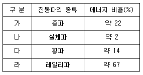
- 가
- 나
- 다
- 라
(정답률: 알수없음)
76. 동적흡진에 관한 설명으로 가장 옳은 것은?
- 진동의 지반 전파를 감소시키기 위해 차단벽 혹은 차단구멍을 설치하여 흡진한다.
- 대상계가 공진할 때 부가질량을 스프링으로 지지하여 대상계의 진동을 억제한다.
- 진동원과 대상계의 거리를 멀게하여 전파되는 진동을 줄인다.
- 진동계에 동일 체적을 가진 기초대를 추가하여 계의 고유진동수를 이동시켜 진동을 줄인다.
(정답률: 알수없음)
77. 방진대책은 발생원, 전파경로, 수진측 대책으로 분류된다. “수진점 근방에 방진구를 판다.”는 일반적으로 위 대책 중 주로 어디에 해당하는가?
- 발생원 대책
- 전파경로 대책
- 수진측 대책
- 해당안됨
(정답률: 알수없음)
78. 자유진동에서 감쇠비 ξ가 주어졌을 때 대수감쇠율을 옳게 표시한 것은?
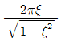
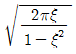
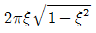
- 2πξ2
(정답률: 알수없음)
79. 서징에 관한 설명으로 옳은 것은?
- 탄성 지지계에서 서징 발생시 급격한 감쇠가 일어난다.
- 코일 스프링의 고유 진동수가 가진 진동수가 일치된 경우 일어난다.
- 서징은 방진고무에서 주로 나타난다.
- 서징이 일어나면 탄성지지계의 진동 전단률이 현저히 저하된다.
(정답률: 알수없음)
80. 진동원에서 1m 떨어진 지점의 진동레벨이 1⑤dB 일 때, 10m 떨어진 지점의 레벨(dB)은? (단, 진동파는 표면파(n=0.5)이고, 지반전파의 감쇠정수 ξ =0.⑤ 이다.)
- 약 91dB
- 약 88dB
- 약 86dB
- 약 83dB
(정답률: 알수없음)
5과목: 소음진동 관계 법규
81. 소음·진동관리법상 인증을 생략할 수 있는 자동차가 아닌 것은?
- 외국에서 국내의 공공기관이나 비영리단체에 무상으로 기증하여 반입하는 자동차
- 외교관, 주한 외국군인 또는 그 가족이 사용하기 위하여 반입하는 자동차
- 항공기 지상조업용(地上操業用)으로 반입하는 자동차
- 여행자 등이 다시 반출할 것을 조건으로 일시 반입한 자동차
(정답률: 알수없음)
82. 소음·진동관리법상 용어의 정의로 옳지 않은 것은?
- “소음”이란 기계·기구·시설, 그 밖의 물체의 사용 또는 공동주택 등 환경부령으로 정하는 장소에서 사람의 활동으로 인하여 발생하는 강한 소리를 말한다.
- “소음·진동방진시설”이란 소음·진동배출시설이 아닌 물체로부터 발생하는 소음·진동을 없애는 시설로서 환경부장관이 국토교통부장관과 협의하여 고시하는 것을 말한다.
- “방진시설”이란 소음·진동배출시설이 아닌 물체로부터 발생하는 진동을 없애거나 줄이는 시설로서 환경부령으로 정하는 것을 말한다.
- “소음·진동배출시설”이란 소음·진동이 발생하는 공장의 기계·기구·시설, 그 밖의 물체로서 환경부령으로 정하는 것을 말한다.
(정답률: 알수없음)
83. 소음·진동관리법상 결격사유로 확인검사대행자의 등록을 할 수 없는 자에 해당되지 않는 것은?
- 확인검사대행자의 등록이 취소된 후 3년이 지나지 아니한 자
- 파산선고를 받고 복권되지 아니한 자
- 피성년후견인 또는 피한정후견인
- 수질 및 수생태계 보전에 관한 법률을 위반하여 징역의 실형을 선고받고 그 형의 집행이 종료되거나 집행을 받지 아니하기로 확정된 후 2년이 지나지 아니한 자
(정답률: 알수없음)
84. 소음·진동관리법상 소음·진동방지시설 중 진동방지시설에 해당하는 것은?
- 방음벽 시설
- 배관진동 절연장치 및 시설
- 흡음장치 및 시설
- 방음외피시설
(정답률: 알수없음)
85. 소음·진동관리법상 소음도 검사기관의 지정기준 중 소음발생건설기계 소음도 검사기관의 시설 및 장비로서 옳은 것은?
- 평가기준음원 발생장치 1대 이상
- 마이크로폰 5대 이상
- 녹음 및 기록장치(5채널용) 1대 이상
- 표준음발생기(300~500Hz) 1대 이상
(정답률: 알수없음)
86. 소음·진동관리법상 공사장 방음시설 설치기준으로 옳지 않은 것은?
- 방음벽시설 전후의 소음도 차이(삽입손실)는 최소 5dB 이상 되어야 하며, 높이는 2.5m 이상 되어야 한다.
- 공사장 인접지역에 고층건물 등이 위치하고 있어, 방음벽시설로 인한 음의 반사피해가 우려되는 경우에는 흡음형 방음벽시설을 설치하여야 한다.
- 방음벽시설에는 방음관의 파손, 도장부의 손상 등이 없어야 한다.
- 방음벽시설의 기초부와 방음판·지주 사이에 틈새가 없도록 하여 음의 누출을 방지하여야 한다.
(정답률: 알수없음)
87. 소음·진동관리법상 소음발생건설기계 중 굴삭기의 출력기준으로 옳은 것은?
- 정격출력 590kW 초과
- 정격출력 19kW 이상 590kW 미만
- 정격출력 19kW 미만
- 휴대용을 포함하며, 중량 5톤 이하
(정답률: 알수없음)
88. 소음·진동관리법상 환경기술인과 관련된 설명 중 옳지 않은 것은?
- 환경기술인으로 임명된 자는 해당 사업장에 상시 근무하여야 한다.
- 총동력합계 3750kW 미만인 사업장은 사업자가 해당 사업장의 배출시설 및 방지시설업무에 종사하는 피고용인 중에서 임명하는 자로 한다.
- 총동력합계 3750kW 이상인 사업장은 소음·진동기사 2급 이상의 기술자격소지자 1명 이상 또는 해당 사업장의 관리책임자로 사업자가 임명하는 자로 한다.
- 환경기술인 자격기준 중 소음·진동기사 2급은 기계분야기사·전기분야기사 각 2급 이상의 자격소지자로서 환경 분야에서 5년 이상 종사한 자로 대체할 수 있다.
(정답률: 알수없음)
89. 소음·진동관리법상 시행규칙 제 2조 소음의 발생장소에 해당되는 업종이 아닌 것은?
- 콜라택업
- 단란주점영업 및 유흥주점영업
- 체육도장업, 체력단련장업
- 이동판매업
(정답률: 알수없음)
90. 소음·진동관리법상 소음·진동관리 종합계획 및 시행계획의 수립 등에 필요한 사항은 다음 중 어느 법에 따르는가?
- 환경부령
- 대통령령
- 시·도시사령
- 특별자치도지사 또는 시장·군수·구청장령
(정답률: 알수없음)
91. 소음·진동관리법상 소음도 검사를 받은 소음발생건설기계 제작자 등은 소음도표지를 알아보기 쉬운 곳에 붙여야 하는데, 이 소음도표지를 붙이지 아니하거나 거짓의 소음도표지를 붙인 자에 대한 벌칙기준으로 옳은 것은?
- 300만원 이하의 과태료를 부과한다.
- 6개월 이하의 징역 또는 500만원 이하의 벌금에 처한다.
- 1년 이하의 징역 또는 1천만원 이하의 벌금에 처한다.
- 3년 이하의 징역 또는 1천500만원 이하의 벌금에 처한다.
(정답률: 알수없음)
92. 소음·진동관리법상 생활소음·진동의 규제기준 중 주거지역에 위치한 동일 건물 내 사업장의 주간 생활소음 기준은 얼마인가?
- 40dB(A) 이하
- 45dB(A) 이하
- 50dB(A) 이하
- 55dB(A) 이하
(정답률: 알수없음)
93. 소음·진동관리법상 교통기관에 해당되지 않는 것은?
- 자동차
- 기차와 전차
- 도로와 철도
- 항공기와 선박
(정답률: 알수없음)
94. 소음·진동관리법상 항공기 소음의 한도 중 공항인근지역의 항공기소음영향도(WECPNL)는?
- 90
- 80
- 75
- 65
(정답률: 알수없음)
95. 소음·진동관리법상 소음·진동배출시설 중 소음배출시설에 해당되지 않는 것은?
- 100대 이상의 공업용 재봉기
- 50마력 이상의 금속절단기
- 자동제병기
- 제관기계
(정답률: 알수없음)
96. 소음·진동관리법상 특정공사의 사전신고 대상 기계·장비가 아닌 것은?
- 항타기·항발기 또는 항타항발기
- 천공기
- 발전기
- 송풍기
(정답률: 알수없음)
97. 소음·진동관리법상 배출시설 변경신고 대상이 아닌 것은?
- 배출시설의 규모를 100분의 30이상(신고 또는 변경신고를 하거나 허가를 받은 규모를 증설하는 누계를 말한다) 증설하는 경우
- 사업장의 명칭을 변경하는 경우
- 사업장의대표자를 변경하는 경우
- 배출시설의 전부를 폐쇄하는 경우
(정답률: 알수없음)
98. 소음·진동관리법상 소음도 검사기관의 장이 5년간 보존하여야 할 서류에 해당되지 않는 것은?
- 소음도 검사 신청 서류
- 소음도 검사기록부
- 소음도 검사기계장비의 정도검사 서류
- 소음도 검사 관련 서류
(정답률: 알수없음)
99. 소음·진동관리법상 소음지도를 작성하고자 할 때 작성계획 고시내용에 해당되지 않는 것은?
- 소음지도의 작성기간
- 소음지도의 작성범위
- 소음지도의 작성비용
- 소음지도의 활용계획
(정답률: 알수없음)
100. 소음·진동관리법상 관리지역 중 산업개발진흥지구의 잠 시간대(22:00~06:00)의 공장진동 배출허용기준은?
- 55dB(V) 이하
- 60dB(V) 이하
- 65dB(V) 이하
- 70dB(V) 이하
(정답률: 알수없음)